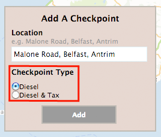

SCENARIO
We have all been there, stuck in a traffic jam that suddenly appeared for no apparent reason on a miserable day. When you get to the top of queue you find that customs officials are checking cars fuel, tax, mot, etc. One hour of your life wasted sitting in traffic.
If only you could have avoided that cue...
OUR PURPOSE
Dieseldippers.com is a website dedicated to highlighting traffic congestion caused by customs checkpoints. If you see tailback on the roads, please update our map with the appropriate location.
HOW TO USE DIESELDIPPERS
1. Enter Location/Postcode of the checkpoint
2. Choose the checkpoint type

3. Click Add
4. If the address was valid it will appear on our map

JUST INCASE YOU ARE CURIOUS
This map is cleared each evening at midnight to ensure that fresh information is provided every day. Any information you submit will be checked and if it is a valid address it will appear on our map a few seconds later. We do not hold any information on anyone who uses DieselDippers.com or submits data to the map.